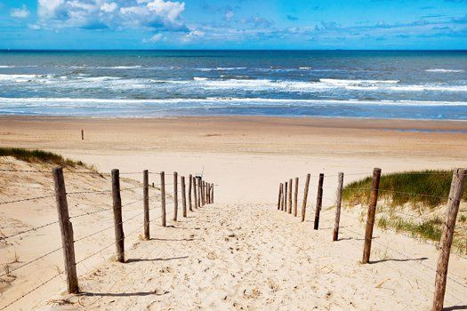
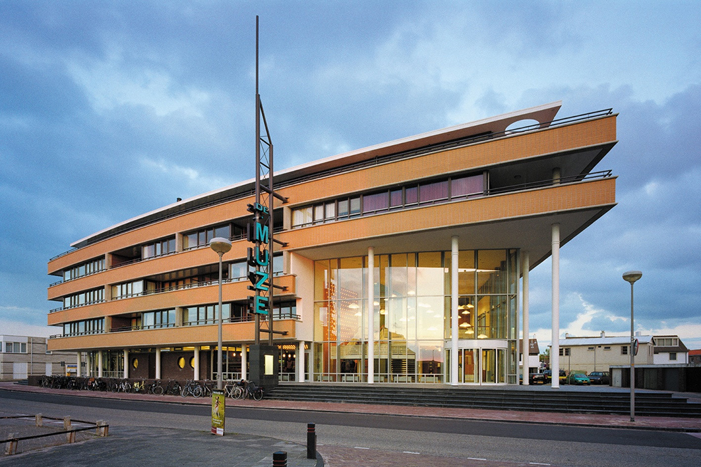

Mijn woonplaats
Noordwijk
Strand noordwijk
Noordwijk is de ideale bestemming voor wie houdt van een veelzijdige strandvakantie.
Want met ruim 13 kilometer schitterend wit strand is er voor iedereen en elke leeftijd genoeg te doen.
Bovendien heeft Noordwijk al 27 keer op rij de Blauwe Vlag gewonnen; hét internationale kwaliteitslabel voor schone en veilige stranden.

Het strand voor sportievelingen
Het strand van Noordwijk is een heerlijke locatie ook als u lekker wilt zwemmen, paardrijden, kitesurfen of hardlopen.
Wilt u dus uw vakantie lekker actief besteden aan het strand, dan kunt u alle kanten op in Noordwijk.
Bij de surfscholen kunt u les nemen en alle benodigdheden huren en bij de manages kunt u terecht voor een bijzondere paardrijrit over het strand van Noordwijk.
Het strand voor de kleintjes
Ook voor de kleintjes is het strand van Noordwijk heerlijk.
Kinderen kunnen veilig spelen en zandkastelen bouwen op het strand.
Wanneer het eb is kunnen ze spelen in de zogenoemde ‘kimmetjes’; kleine zeetjes op het strand.
Daarnaast kunnen ze volop mooie schelpen zoeken als kokkels, zaagjes en hoorntjes.
Mocht het weer wat minder zijn dan kunt u met uw kinderen onder andere naar Space Expo, de eerste permanente tentoonstelling over de ruimtevaart.
Het strand voor natuurliefhebbers
Houdt je van lange wandelingen over het strand door schitterende duingebieden met rijke flora en fauna?
Dan is het strand van Duindamse- en Langevelderslag schitterend door de omgeven natuur en duinen.

De Muze
Theater aan de kust Sinds 2004 biedt het ‘kusttheater’
De Muze aan het Wantveld in Noordwijk een zeer gevarieerd programma van kleinere voorstellingen.
Ook film vormt een vast onderdeel.
Het multifunctionele theater ligt op loopafstand van het strand en geeft een panoramisch uitzicht op zee.
De vlakkevloer van de Apollozaal heeft 345 zitplaatsen verdeeld over zaal en een balkon.
Daarnaast is er de Thaliazaal (164 plaatsen), de Uraniazaal (85), de Eratozaal (66) en de Cliozaal met 56 stoelen.
Het speelvlak van de Apollozaal is 15 bij 12 meter. Er is geen orkestbak.